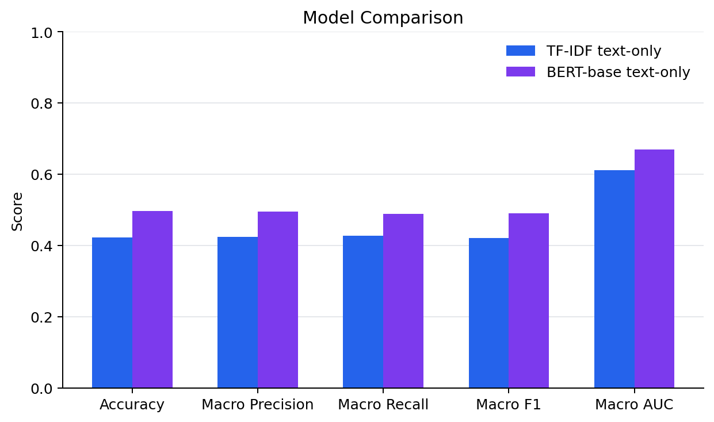
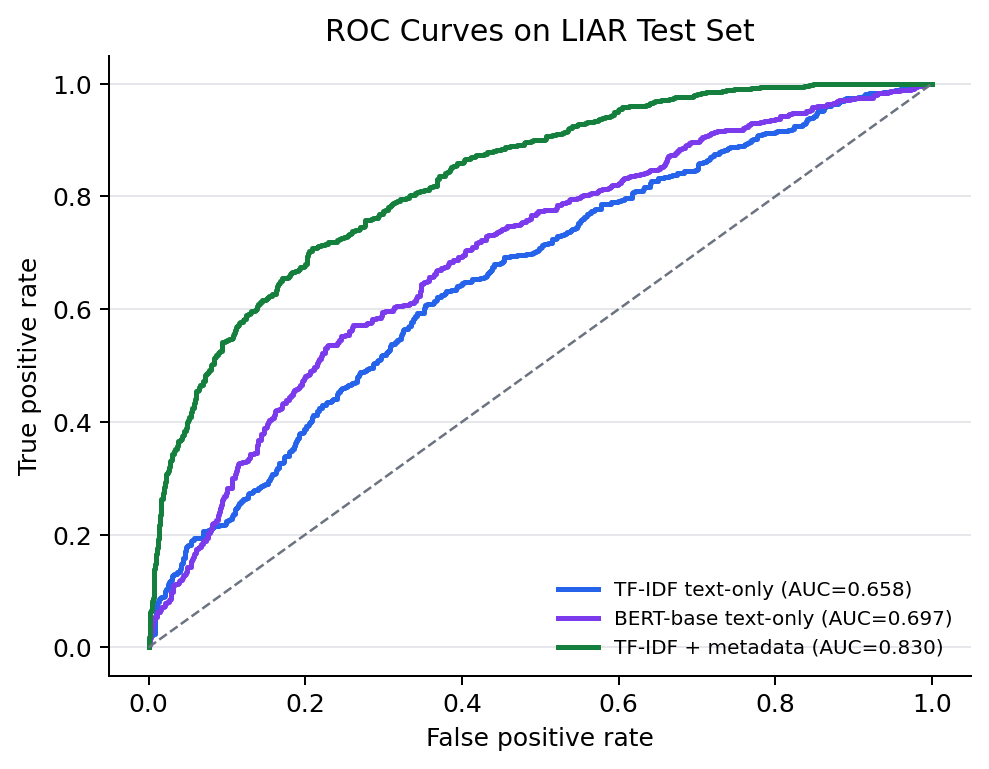
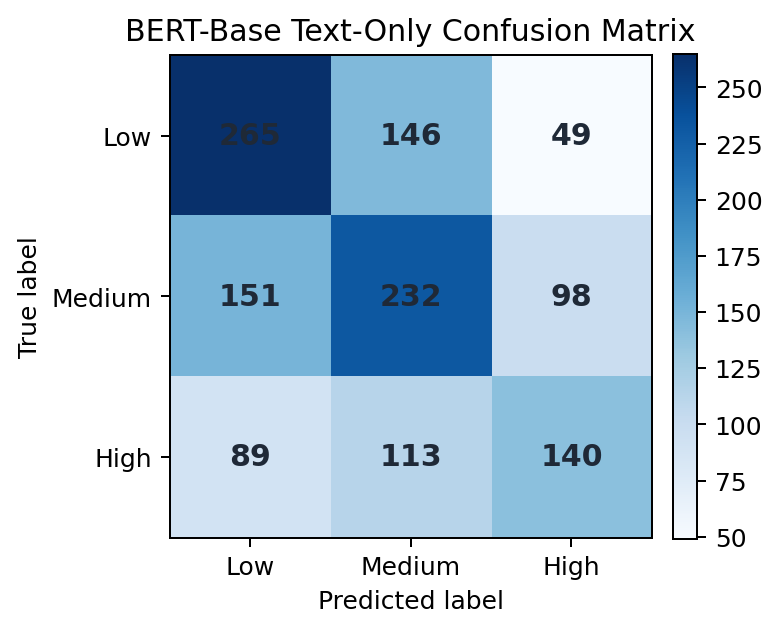

Data Mapping
True and mostly-true claims are Low risk; half-true and barely-true claims are Medium risk; false and pants-fire claims are High risk.
ENGG1910 Course Project
A reproducible NLP prototype that maps political claims into Low, Medium, and High misinformation risk, then compares a TF-IDF logistic regression baseline with a BERT-base text-only model.
BERT-base text-only
BERT-base text-only
TF-IDF text-only
Official LIAR test split
Method
True and mostly-true claims are Low risk; half-true and barely-true claims are Medium risk; false and pants-fire claims are High risk.
Both reported models use the same claim text, subject, and context fields from the official LIAR train, validation, and test splits.
The final experimental label is selected by multiclass argmax over Low, Medium, and High probabilities.
Results
| Model | Accuracy | Macro Precision | Macro Recall | Macro-F1 | Weighted-F1 | Macro AUC |
|---|---|---|---|---|---|---|
| TF-IDF text-only | 0.422 | 0.424 | 0.427 | 0.421 | 0.421 | 0.611 |
| BERT-base text-only | 0.496 | 0.495 | 0.489 | 0.491 | 0.495 | 0.670 |
Figures



Ethics
The assistant should support user judgment rather than censor claims or replace professional fact-checking. False positives can reduce trust in legitimate speech, while false negatives can create over-confidence. Future work should test broader domains, multilingual claims, source reliability signals, and real social-media repost patterns.